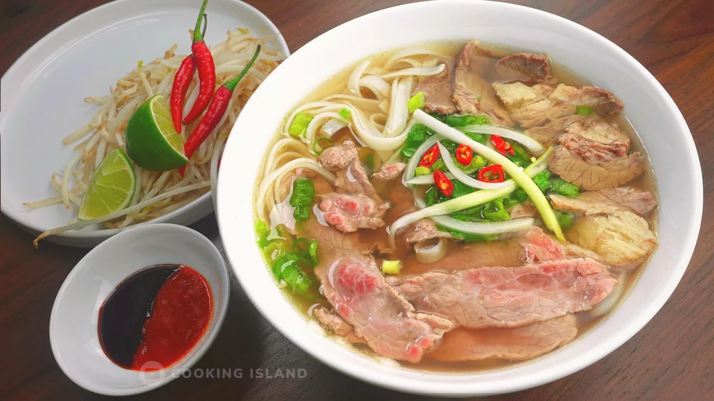
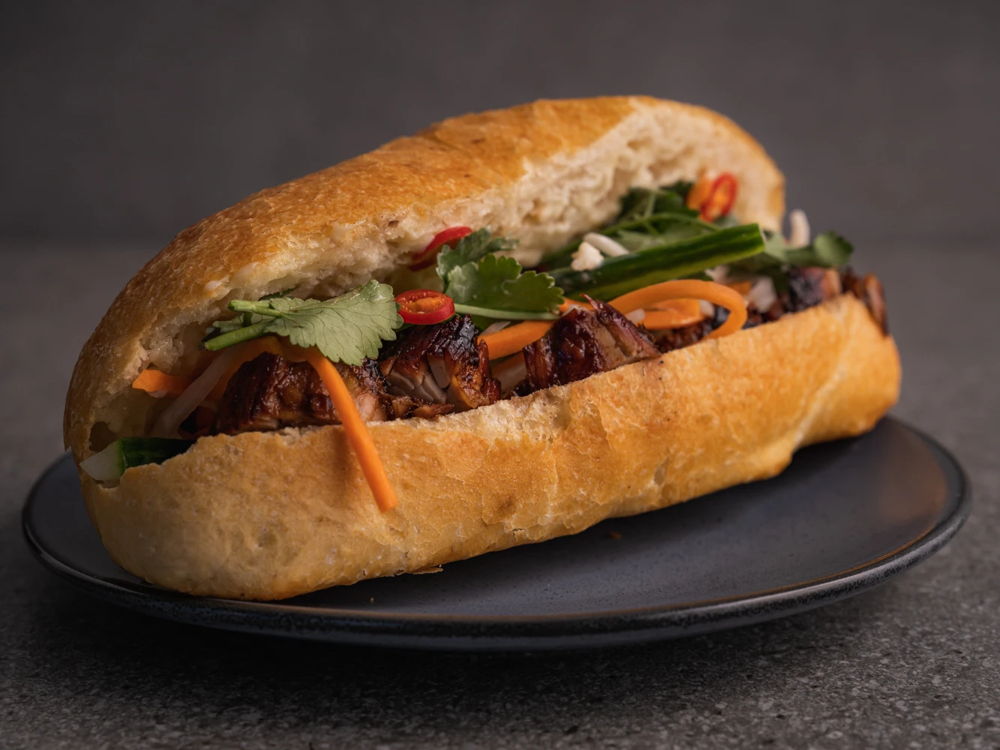
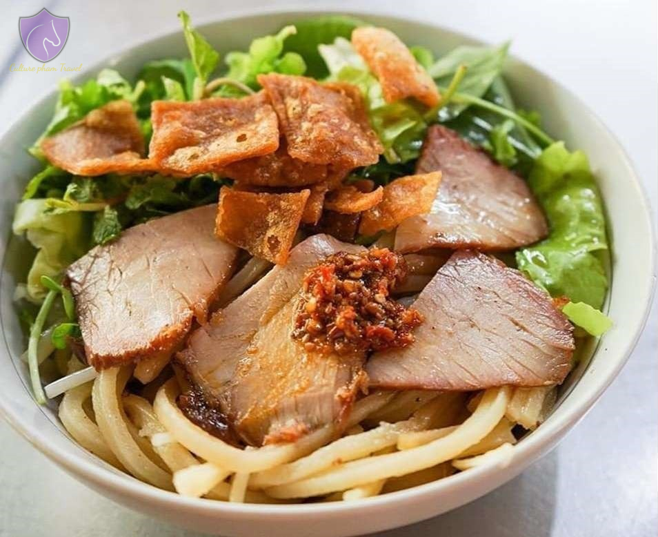

Vietnamese Cuisine
Discover the delicious flavors of traditional Vietnamese food.

Pho
A flavorful noodle soup with beef or chicken, herbs, and rice noodles.

Banh Mi
A delicious Vietnamese sandwich with crispy baguette, meats, and fresh vegetables.
Goi Cuon
Fresh spring rolls with shrimp, pork, herbs, and vermicelli wrapped in rice paper.

Cao Lau
A regional noodle dish from Hoi An, featuring pork, fresh greens, and crispy croutons.